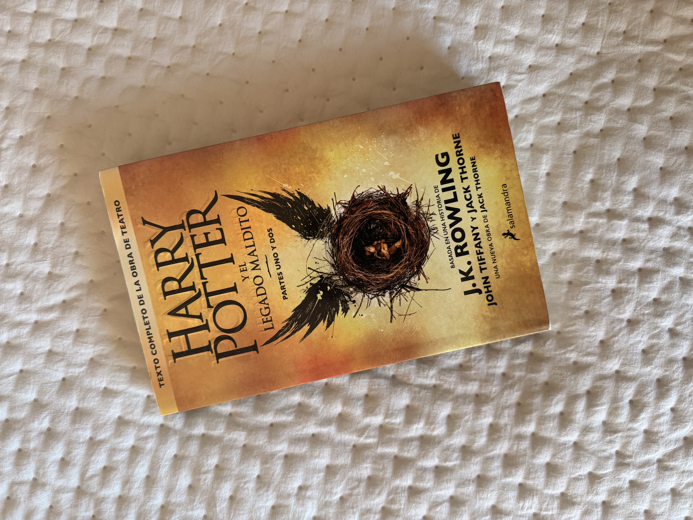

Las reliquias de la muerte, y otros



¿De qué trata Las reliquias de la muerte?
Harry, Ron y Hermione abandonan Hogwarts para buscar la manera de derrotar a Voldemort. Durante el viaje, deberán enfrentar numerosos peligros y descubrir el secreto de las Reliquias de la Muerte.
- Fecha de publicación original: 21 de julio de 2007.
- Publicacion de la edicion: Junio de 2020
- Autor: J. K. Rowling.
- Publicación de la obra cinematográfica: La historia fue adaptada en dos películas, las cuales fueron grabadas en simultaneo. La primera se estrenó el 19 de noviembre de 2010 y la segunda, el 15 de julio de 2011.
¿De qué trata El legado maldito?
Esta historia transcurre diecinueve años después del final de la saga. Se enfoca principalmente en el hijo de Harry, Albus, el cual comienza sus estudios en Hogwarts y entabla una amistad con el hijo de Draco Malfoy, Scorpius. Juntos enfrentan las consecuencias de alterar acontecimientos del pasado.
- Fecha de publicación original: 31 de julio de 2016.
- Autores: Fue escrito por el dramaturgo Jack Thorne, a partir de una historia original creada en conjunto por Thorne, J. K. Rowling y el director John Tiffany.
- Obra cinematográfica: Hasta el momento, no cuenta con una adaptación cinematográfica oficial.
- Dato curioso:La obra generó opiniones divididas entre los fanes. Algunas críticas señalan que ciertos personajes no estan del todo fiel a su versión original. Por este motivo,y muchos mas, varios lectores no la consideran parte de la historia principal.
¿De qué trata Quidditch a través de los tiempos?
Este libro presenta la historia y la evolución del quidditch, el deporte más popular del mundo mágico. Explica sus reglas, las posiciones de los jugadores y los equipos más importantes.
- Fecha de publicación original: 12 de marzo de 2001.
- Autor: J. K. Rowling, publicado bajo el seudónimo de Kennilworthy Whisp.
- Formato de la obra: Es un libro complementario escrito como si fuera un ejemplar de la biblioteca de Hogwarts.
- Obra cinematográfica: No cuenta con una adaptación cinematográfica oficial.